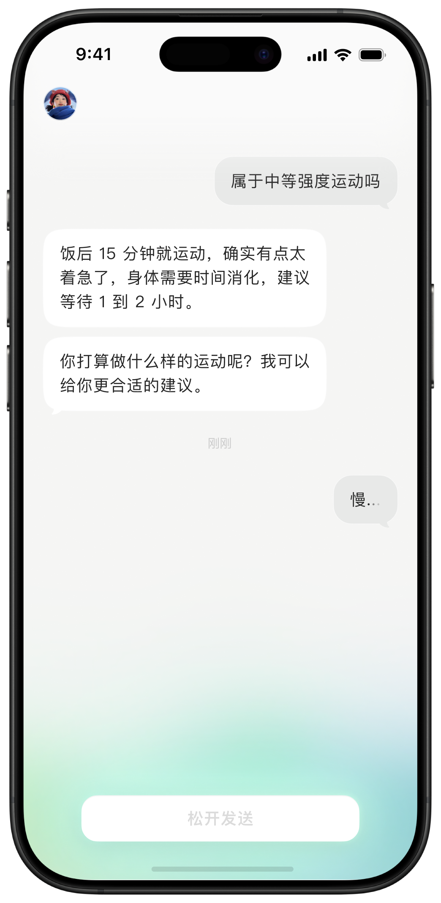
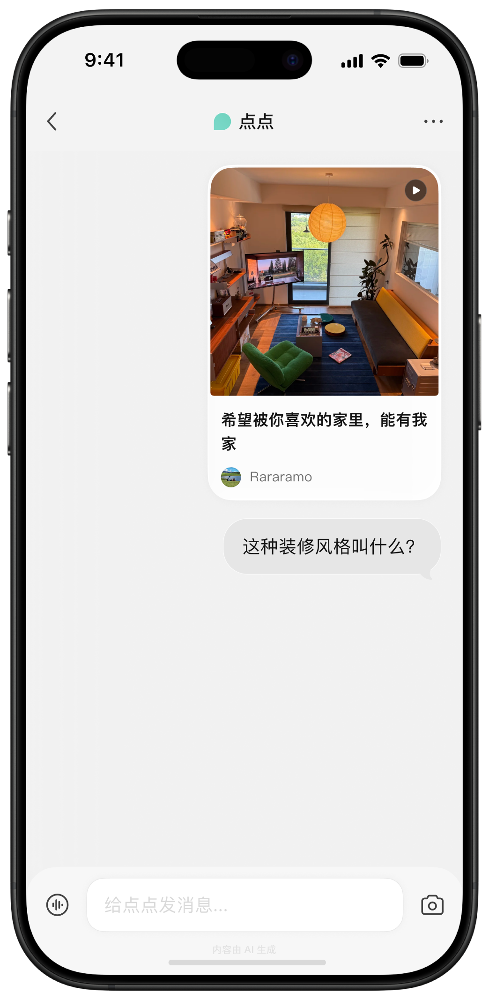
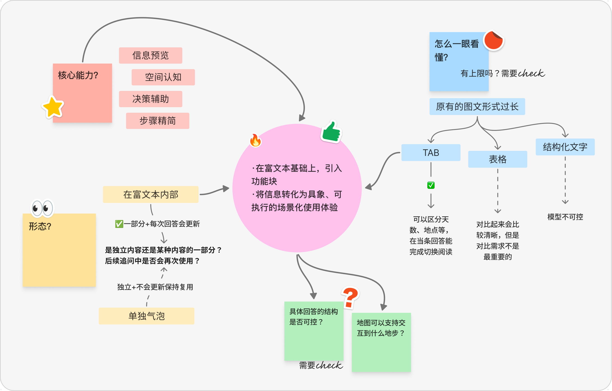
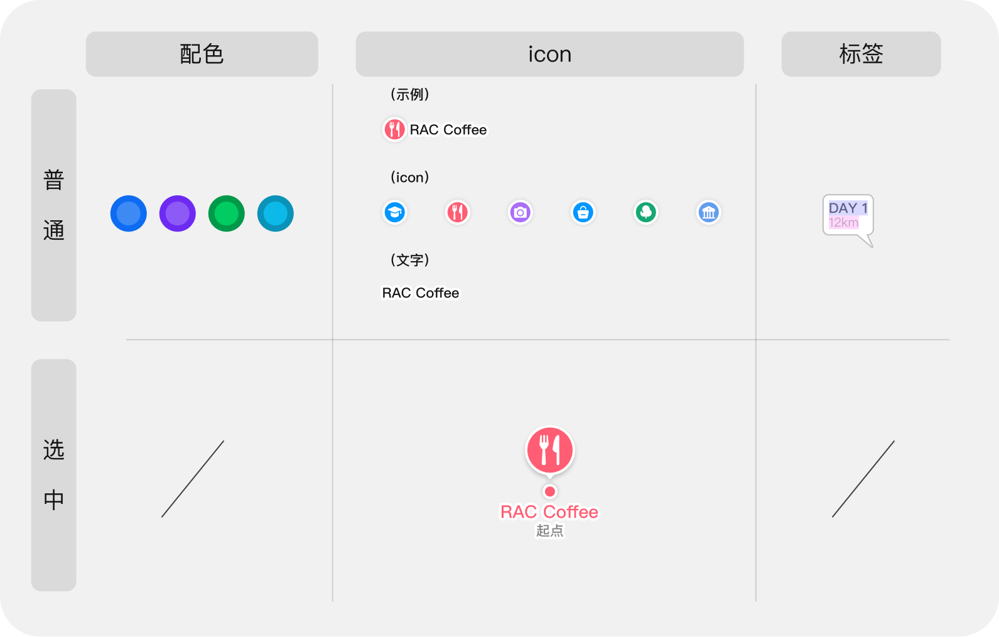

Current
现状
- 行程信息以图文形式呈现
- 回答以长篇富文本为主
- 实际上已经完成内容筛选和规划
Case study · 2025
让 AI 不只生成答案，而是进入用户浏览、规划和提问的真实路径。
01 · 项目与转型
点点是一款基于小红书 UGC 生态的 AI 工具。它利用平台上的真实生活经验和内容数据，在旅行、消费与日常决策等场景中提供回答。
我在小红书 UED 团队参与点点 3.0 迭代，独立负责作品中呈现的需求，从问题定义、交互方案到视觉与开发联调，最终均正式上线。
Positioning shift
早期希望通过小红书内容理解用户偏好，成为一个“懂你的 AI 助手”。但定位过于泛化，既不像工具那样明确，也缺少持续使用的具体理由。
3.0 不再试图解决一切问题，而是进入浏览、搜索、复制链接和行程规划等具体场景，成为“陪你逛小红书的 AI 助手”。


02 · 用户困境
这是一个从设计观察出发的需求。我希望把 AI 已经完成的内容筛选和行程规划，转化为用户能直接看懂并使用的空间信息。
“收藏了一堆，但要我现在排路线，还是得重新整理。”
“出来旅游打开小红书再打开 xx 地图一万次……”
“我只是想大概预览一下有哪些地方得去！”
Current
Gap
Opportunity
03 · 设计方案
Design thinking
地图需要提供预览、空间感知和决策辅助，也要保持对话的连贯性。我比较了富文本内嵌、独立气泡，以及 Tab、表格和结构化文本等组织方式。
关键并不是“加入一张地图”，而是控制地图与回答的关系：什么时候看总览、什么时候进入细节、哪些内容需要继续留在文字中。

地图路线将点位关系、移动方向和整体结构提前呈现，让用户在阅读细节前形成整体印象。
按日期或路线切换内容，减少一次展开全部信息的阅读压力，也方便回到特定行程。
地图与文字处于同一上下文中，用户无需反复跳转，就能理解路线与说明之间的关系。
Design handoff
为减少开发对接中的理解偏差，我将地图的配色、地点图标与标签状态整理为表格化交付规范。

04 · 最终效果
查看点位关系、移动方向和整段行程。
按日期快速定位对应的路线与内容。
边看边用地点、时间、图片与行动信息。
05 · 其他参与
除了地图路线，我也独立负责并上线了链接识别、Loading 动画、分享链路和常驻入口。点击项目可查看对应设计画面。
Loading 状态
Next →